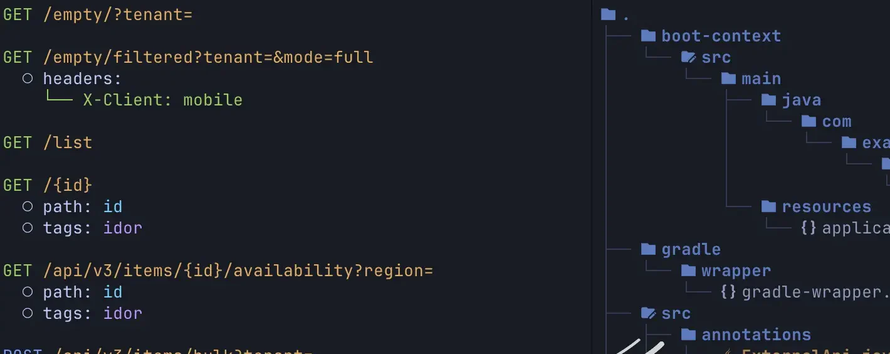
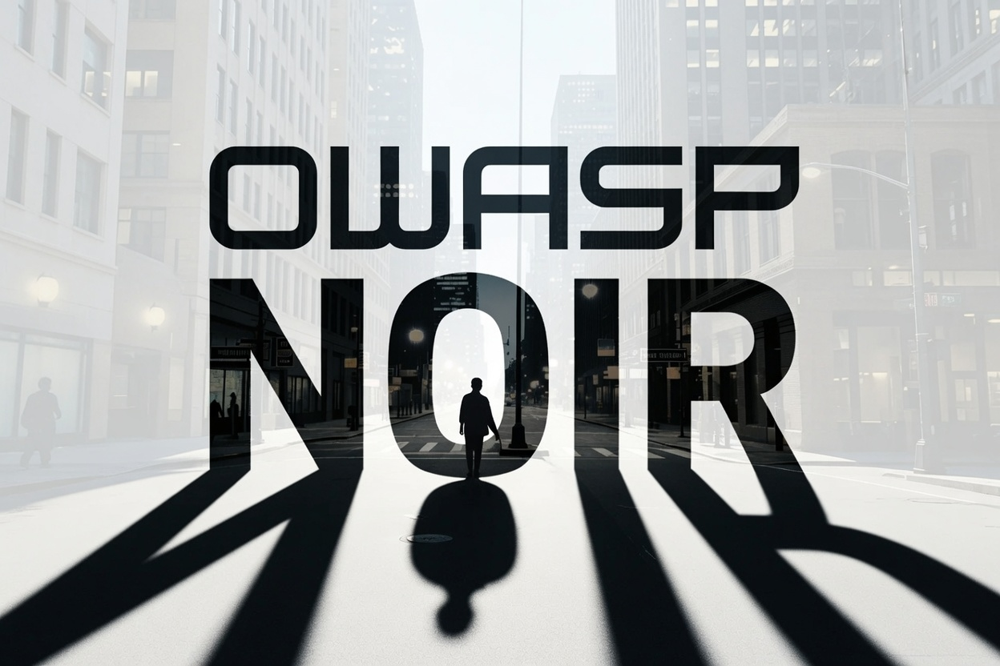
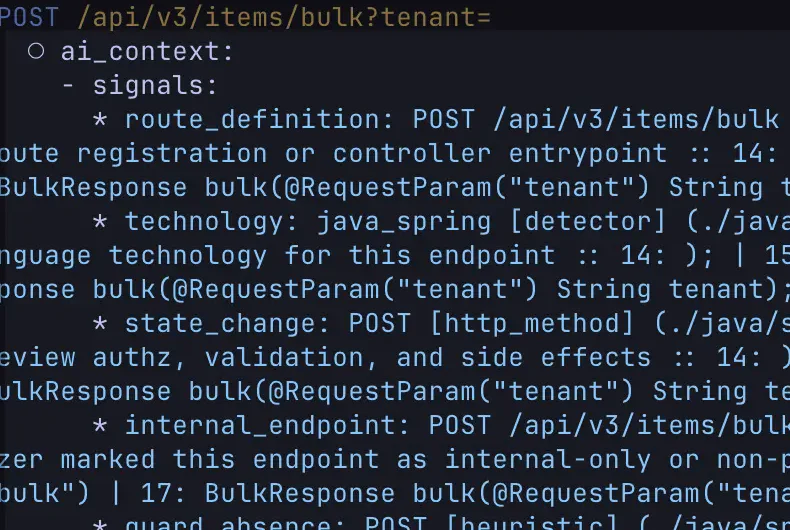
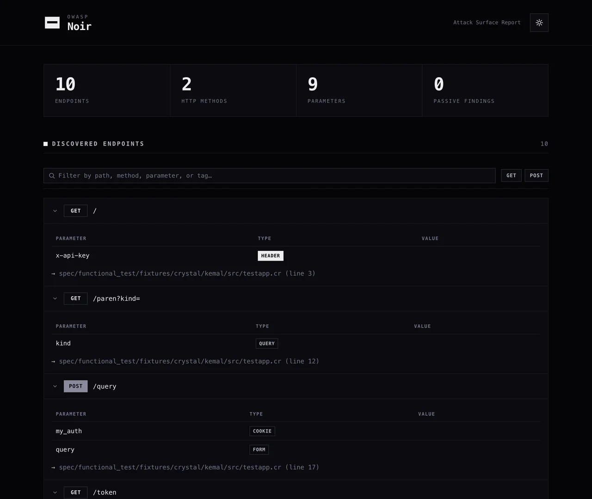

Endpoint extraction
Static analysis pulls routes, methods, parameters, headers, and cookies out of the code. Shadow APIs and forgotten handlers surface in the same pass, not a separate mode.



Noir reads your source and returns the routes, parameters, and headers an attacker can reach.
One pass over your source produces the endpoint inventory that reviewers, models, and scanners all need.
Static analysis pulls routes, methods, parameters, headers, and cookies out of the code. Shadow APIs and forgotten handlers surface in the same pass, not a separate mode.

--ai-context attaches guards, sinks, validators, and signals to each endpoint, so a model reads the handler instead of the whole repository.

One binary, no plugins and no per-language setup. Frameworks the static rules miss fall back to an LLM.
Severity-graded rules run over the same tree and report hardcoded keys, tokens, and credentials. Bring your own rules or use the community set.
Seventeen taggers annotate endpoints with the properties that decide where you look first.
corsjwtoauthgraphqlpiipaymentfile_uploadwebhookwebsocketsoapcryptodebugadminaccount_recoveryapi_docshunt_parammcp
Noir detects the language, the framework, and the routing convention on its own. There is nothing to configure first.
noir scan ./your-project
Every endpoint carries the file and line it came from, so a finding is one click away from the code that produced it.
noir scan ./your-project --include path,techs -f json -o endpoints.json
Export OpenAPI for a scanner, SARIF for your code-scanning dashboard, or route probes straight through an intercepting proxy.
noir scan ./your-project -f oas3 --probe-via http://127.0.0.1:8080
Twenty-two of them. Pick the one your next tool already speaks.
plainjsonjsonlyamltomlmarkdown-tablesarifhtmloas2oas3postman
curlhttpiepowershelladbsimctlmermaidonly-urlonly-paramonly-headeronly-cookieonly-tag
A focused list of attacker-reachable entrypoints instead of a repository to skim.
The same list, plus the guards, sinks, and validators around each endpoint.
Routes a crawler would never reach, handed to ZAP, Burp, or Caido as a proxy target or an OpenAPI import.

Noir is an OWASP Foundation project, MIT licensed, and maintained by the people who use it. Framework support, scan rules, and output formats all arrive as contributions.
Read the contributing guideThanks to everyone who has contributed.